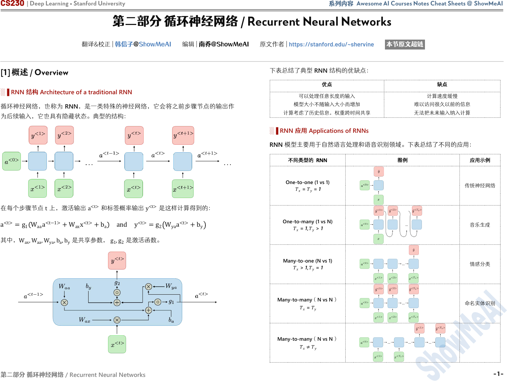
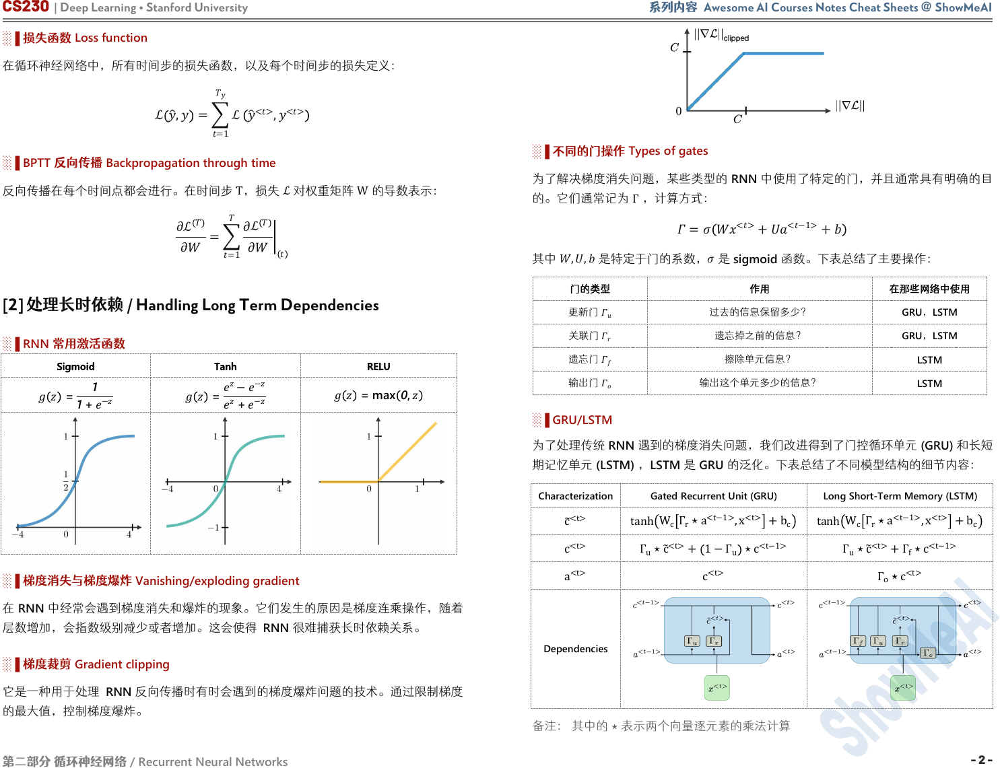
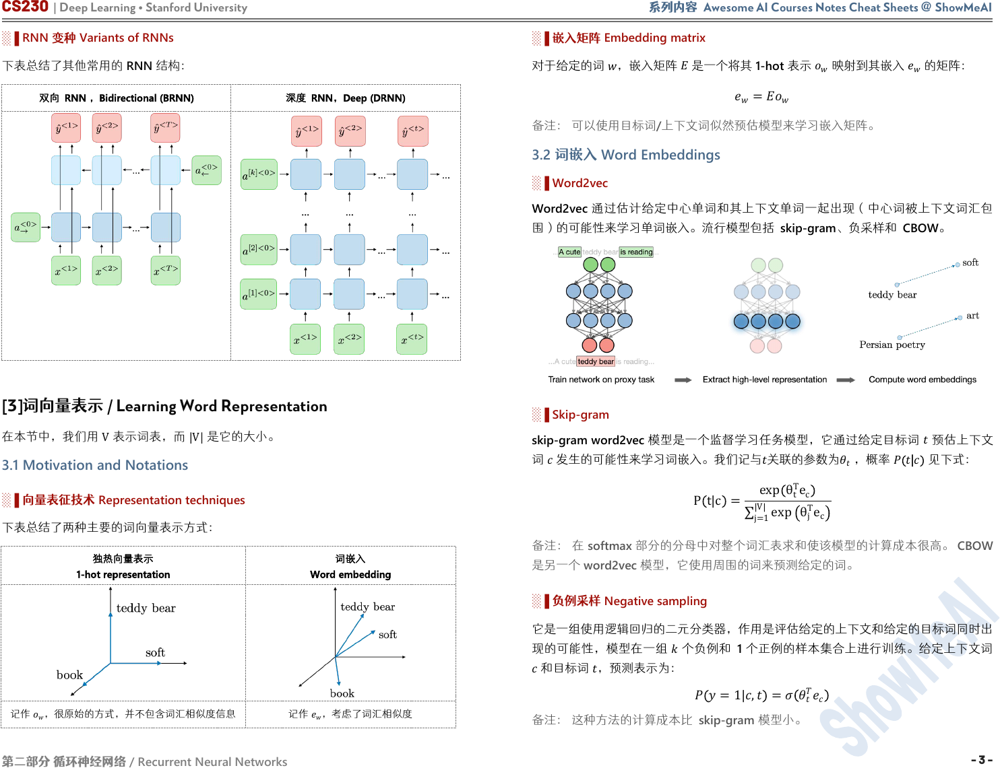
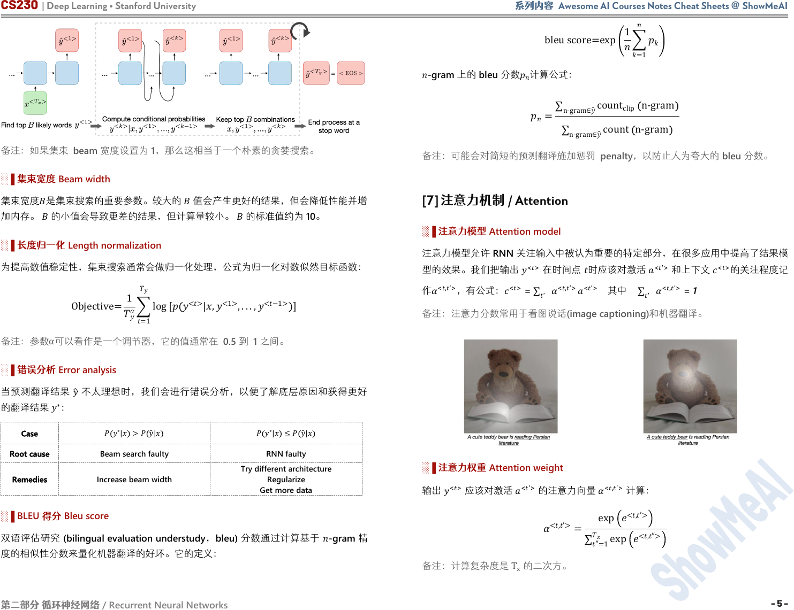

CS230
| Deep Learning
•
Stanford University
系列内容
Awesome AI Courses Notes Cheat Sheets
@
ShowMeAI
第二部分 循环神经网络
/ Recurrent Neural Networks
- 1 -
第二部分 循环神经网络
/ Recurrent Neural Networks
翻译&校正 | 韩信子@ShowMeAI 编辑 | 南乔@ShowMeAI 原文作者 | https://stanford.edu/~shervine 本节原文超链
[1] 概述 / Overview
░▐ RNN 结构 Architecture of a traditional RNN
循环神经网络，也称为 RNN，是一类特殊的神经网络，它会将之前步骤节点的输出作
为后续输入，它也具有隐藏状态。典型的结构：
在每个步骤节点
t
上，激活输出
a
<t>
和标签概率输出
y
<t>
是这样计算得到的：
a
<t>
=
g
1
W
aa
a
<t−1>
+
W
ax
x
<t>
+b
a
and y
<t>
=
g
2
W
ya
a
<t>
+b
y
其中，
W
ax
,W
aa
,W
ya
,b
a
,b
y
是共享参数，
g
1
,g
2
是激活函数。
下表总结了典型 RNN 结构的优缺点：
优点
缺点
可以处理任意长度的输入
模型大小不随输入大小而增加
计算考虑了历史信息，权重跨时间共享
计算速度缓慢
难以访问很久以前的信息
无法把未来输入纳入计算
░▐ RNN 应用 Applications of RNNs
RNN 模型主要用于自然语言处理和语音识别领域。下表总结了不同的应用：
不同类型的 RNN
图例
应用示例
One-to-one (1 vs 1)
=
=
1
传统神经网络
One-to-many (1 vs N)
= 1,
> 1
音乐生成
Many-to-one (N vs 1)
> 1,
= 1
情感分类
Many-to-many（N vs N）
=
命名实体识别
Many-to-many（N vs N）
≠

CS230 | Deep Learning • Stanford University 系列内容 Awesome AI Courses Notes Cheat Sheets @ ShowMeAI
第二部分 循环神经网络
/ Recurrent Neural Networks
- 2 -
░▐ 损失函数
Loss function
在循环神经网络中，所有时间步的损失函数，以及每个时间步的损失定义：
ℒ
, =
=1
ℒ
<>
,
<>
░▐
BPTT
反向传播
Backpropagation through time
反向传播在每个时间点都会进行。在时间步
T
，损失
ℒ
对权重矩阵
W
的导数表示：
∂ℒ
∂
=
=1
∂
ℒ
∂
[2] 处理长时依赖 / Handling Long Term Dependencies
░▐ RNN 常用激活函数
Sigmoid
Tanh
RELU
=
1
1 +
−
=
−
−
+
−
= max 0,
░▐ 梯度消失与梯度爆炸
Vanishing/exploding gradient
在
RNN
中经常会遇到梯度消失和爆炸的现象。它们发生的原因是梯度连乘操作，随着
层数增加，会指数级别减少或者增加。这会使得 RNN 很难捕获长时依赖关系。
░▐ 梯度裁剪 Gradient clipping
它是一种用于处理 RNN 反向传播时有时会遇到的梯度爆炸问题的技术。通过限制梯度
的最大值，控制梯度爆炸。
░▐ 不同的门操作
Types of gates
为了解决梯度消失问题，某些类型的
RNN
中使用了特定的门，并且通常具有明确的目
的。它们通常记为
Γ
，计算方式：
=
<>
+
<−1>
+
其中
,,
是特定于门的系数，
是 sigmoid 函数。下表总结了主要操作：
门的类型
作用
在那些网络中使用
更新门
过去的信息保留多少？
GRU，LSTM
关联门
遗忘掉之前的信息？
GRU，LSTM
遗忘门
擦除单元信息？
LSTM
输出门
输出这个单元多少的信息？
LSTM
░▐ GRU/LSTM
为了处理传统
RNN
遇到的梯度消失问题，我们改进得到了门控循环单元
(GRU)
和长短
期记忆单元
(LSTM)
，
LSTM
是
GRU
的泛化。下表总结了不同模型结构的细节内容：
Characterization
Gated Recurrent Unit (GRU)
Long Short-Term Memory (LSTM)
c
<t>
tanh
W
c
Γ
r
⋆a
<t−1>
,x
<t>
+b
c
tanh
W
c
Γ
r
⋆a
<t−1>
,x
<t>
+b
c
c
<t>
Γ
u
⋆c
<t>
+ 1−Γ
u
⋆c
<t−1>
Γ
u
⋆c
<t>
+Γ
f
⋆c
<t−1>
a
<t>
c
<t>
Γ
o
⋆c
<t>
Dependencies
备注： 其中的
⋆
表示两个向量逐元素的乘法计算

CS230 | Deep Learning • Stanford University 系列内容 Awesome AI Courses Notes Cheat Sheets @ ShowMeAI
第二部分 循环神经网络
/ Recurrent Neural Networks
- 3 -
░▐
RNN
变种
Variants of RNNs
下表总结了其他常用的
RNN
结构：
双向 RNN ，Bidirectional (BRNN)
深度 RNN，Deep (DRNN)
[3]词向量表示 / Learning Word Representation
在本节中，我们用
V
表示词表，而
V
是它的大小。
3.1 Motivation and Notations
░▐ 向量表征技术 Representation techniques
下表总结了两种主要的词向量表示方式：
独热向量表示
1-hot representation
词嵌入
Word embedding
记作
，很原始的方式，并不包含词汇相似度信息
记作
，考虑了词汇相似度
░▐ 嵌入矩阵
Embedding matrix
对于给定的词
，嵌入矩阵
是一个将其
1-hot
表示
映射到其嵌入
的矩阵：
=
备注： 可以使用目标词/上下文词似然预估模型来学习嵌入矩阵。
3.2 词嵌入 Word Embeddings
░▐ Word2vec
Word2vec
通过估计给定中心单词和其上下文单词一起出现（中心词被上下文词汇包
围）的可能性来学习单词嵌入。流行模型包括 skip-gram、负采样和 CBOW。
░▐
Skip-gram
skip-gram word2vec
模型是一个监督学习任务模型，它通过给定目标词
预估上下文
词
发生的可能性来学习词嵌入。我们记与
关联的参数为
，概率
|
见下式：
P t|c =
exp θ
t
T
e
c
j=1
V
exp
θ
j
T
e
c
备注： 在 softmax 部分的分母中对整个词汇表求和使该模型的计算成本很高。 CBOW
是另一个 word2vec 模型，它使用周围的词来预测给定的词。
░▐ 负例采样 Negative sampling
它是一组使用逻辑回归的二元分类器，作用是评估给定的上下文和给定的目标词同时出
现的可能性，模型在一组
个负例和 1 个正例的样本集合上进行训练。给定上下文词
和目标词
，预测表示为：
=1|,
=
备注： 这种方法的计算成本比 skip-gram 模型小。

CS230 | Deep Learning • Stanford University 系列内容 Awesome AI Courses Notes Cheat Sheets @ ShowMeAI
第二部分 循环神经网络
/ Recurrent Neural Networks
- 4 -
░▐ GloVe
GloVe 模型是词表示的全局向量的缩写，是一种词嵌入技术，它使用共现矩阵
，其中
每个
,
表示目标
和上下文
共现的次数。其代价函数
：
=
1
2
,=1
+
+
′−log
2
其中
是一个加权函数，使得
,
=0⇒
,
=0
。 鉴于
和
在该模型中的对称
性，最终词嵌入
final
由下式给出：
final
=
+
2
备注： 学习到的词嵌入的各个组成部分不一定是可解释的。
[4] 词向量对比 / Comparing Words
░▐ 余弦相似度
Cosine similarity
词
1
和
2
之间的余弦相似度可以通过公式计算：
similarity=
1
⋅
2
|
1
| |
2
|
=cos
备注：
θ
是词向量
w
1
和
w
2
之间的夹角。
-SNE(
-distributed Stochastic Neighbor Embedding)
是一种可以将高维向量投射到
低维空间的技术。在实践中，它通常用于在
2D
空间中可视化词向量。
[5] 语言模型 / Language Model
░▐ 概述 Overview
语言模型用于估计句子
的概率。
░▐
n
-gram
模型
该模型是一种简单的方法，旨在通过计算某个表达式在训练数据中出现的次数来量化它
在语料库中出现的概率。
░▐ 困惑度 Perplexity
语言模型通常使用困惑度度量（也称为 PP）进行评估，可以将其解释为由词数
归一
化的数据集的逆概率。困惑度越低越好，定义：
PP=
=1
1
=1
⋅
1
备注：
PP
常用在
t-SNE.
[6] 机器翻译 / Machine Translation
░▐ 概述
[Overview]
机器翻译模型有点像语言模型，不同之处在于它有一个前置的编码器网络。也因为这
样，它有时被称为条件语言模型。目标是找到一个句子
使得：
= argmax
<1>
,...,
<
>
<1>
,...,
<
>
|
░▐ 集束搜索 Beam search
Beam search
是一种用于机器翻译和语音识别的启发式搜索算法，用于在给定输入
x
的情况下找到最可能的句子
y
。
第 1 步：查找前
B
个可能的词
y
<1>
第 2 步：计算条件概率
y
<k>
|x,y
<1>
,...,y
<k−1>
第 3 步：保留 top
B
个组合
x,y
<1>
,...,y
<k>

CS230 | Deep Learning • Stanford University 系列内容 Awesome AI Courses Notes Cheat Sheets @ ShowMeAI
第二部分 循环神经网络
/ Recurrent Neural Networks
- 5 -
备注：如果集束 beam 宽度设置为 1，那么这相当于一个朴素的贪婪搜索。
░▐ 集束宽度 Beam width
集束宽度
是集束搜索的重要参数。较大的
值会产生更好的结果，但会降低性能并增
加内存。
的小值会导致更差的结果，但计算量较小。
的标准值约为 10。
░▐ 长度归一化 Length normalization
为提高数值稳定性，集束搜索通常会做归一化处理，公式为归一化对数似然目标函数：
Objective=
1
=1
log
[
<>
|,
<1>
,...,
<−1>
]
备注：参数
α
可以看作是一个调节器，它的值通常在 0.5 到 1 之间。
░▐ 错误分析 Error analysis
当预测翻译结果
不太理想时，我们会进行错误分析，以便了解底层原因和获得更好
的翻译结果
∗
：
Case
∗
| >
|
∗
| ≤
|
Root cause
Beam search faulty
RNN faulty
Remedies
Increase beam width
Try different architecture
Regularize
Get more data
░▐
BLEU
得分
Bleu score
双语评估研究
(bilingual evaluation understudy
，
bleu)
分数通过计算基于
-gram
精
度的相似性分数来量化机器翻译的好坏。它的定义：
bleuscore=exp
1
=1
-gram
上的
bleu
分数
计算公式：
=
n-gram∈
count
clip
n-gram
n-gram∈
count
n-gram
备注：可能会对简短的预测翻译施加惩罚
penalty
，以防止人为夸大的
bleu
分数。
[7] 注意力机制 / Attention
░▐ 注意力模型
Attention model
注意力模型允许
RNN
关注输入中被认为重要的特定部分，在很多应用中提高了结果模
型的效果。我们把输出
<>
在时间点
时应该对激活
<′>
和上下文
<>
的关注程度记
作
<,′>
，有公式：
<>
=
′
<,′>
<′>
其中
′
<,′>
= 1
备注：注意力分数常用于看图说话(image captioning)和机器翻译。
░▐ 注意力权重 Attention weight
输出
<>
应该对激活
<′>
的注意力向量
<,′>
计算：
<,′>
=
exp
<,′>
″=1
exp
<,″>
备注：计算复杂度是
T
x
的二次方。
CS230 | Deep Learning • Stanford University 系列内容 Awesome AI Courses Notes Cheat Sheets @ ShowMeAI
第二部分 循环神经网络
/ Recurrent Neural Networks
- 6 -
Awesome AI Courses Notes Cheat Sheets
Machine Learning
CS229
Deep Learning
CS230
Natural Language Processing
CS224n
Computer Vision
CS231n
Deep Reinforcement Learning
CS285
Neural Networks for NLP
CS11-747
DL for Self-Driving Cars
6.S094
...
Stanford
Stanford
Stanford
Stanford
UC Berkeley
CMU
MIT
...
是 ShowMeAI 资料库的分支系列，覆盖最具知名度的 TOP20+门 AI 课程，旨在为读者和
学习者提供一整套高品质中文速查表，可以点击【这里】查看。
斯 坦 福 大 学 （ Stanford University ） 的 Machine Learning （ CS229 ） 和 Deep Learning
（CS230）课程，是本系列的第一批产出。
本批两门课程的速查表由斯坦福大学计算机专业学生 Shervine Amidi 总
结整理。原速查表为英文，可点击【这里】查看
，ShowMeAI
对内容进行
了翻译、校对与编辑排版，整理为当前的中文版本。
有任何建议和反馈，也欢迎通过下方渠道和我们联络 (*￣3￣)
CS229 | Machine Learning @ Stanford University
CS230 | Deep Learning @ Stanford University
监督学习
Supervised Learning
无监督学习
Unsupervised Learning
深度学习
Deep Learning
机器学习技巧和经验
Tips and Tricks
卷积神经网络
CNN
循环神经网络
RNN
深度学习技巧与建议
Tips and Tricks
中文速查表链接
中文速查表链接
中文速查表链接
中文速查表链接
中文速查表链接
中文速查表链接
中文速查表链接
概率统计
Probabilities /Statistics
线性代数与微积分
Linear Algebra and Calculus
GitHub
ShowMeAI
https://github.com/
ShowMeAI-Hub/
ShowMeAI 研究中心
扫码回复”
速查表
”
下载
最新
全套资料
中文速查表链接
中文速查表链接